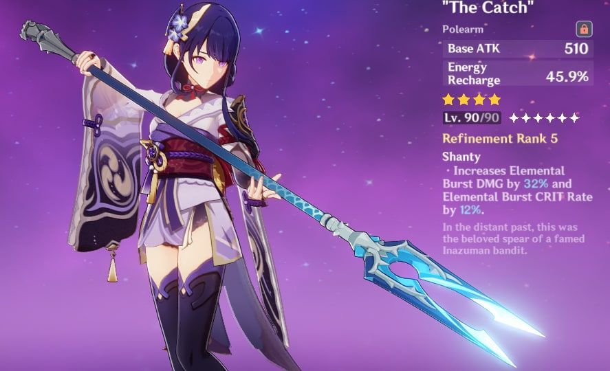

Этот сайт был призван помочь вам разобраться в такой сложной игре, как Genshin Impact

Артефакты
Артефакты — это экипируемое снаряжение, повышающее характеристики персонажей.

Оружие
Оружие в Genshin Impact — это снаряжение, с помощью которого персонаж может наносить урон врагам.
В настоящее время в Genshin Impact есть 5 различных типов оружия.

Таланты
Таланты — это особые способности, которыми обладают персонажи.
Они делятся на два типа: Боевые и Пассивные. Уровень пассивных талантов нельзя повысить.

Персонажи
Персонажи в Genshin Impact могут быть получены в первую очередь в гача-системе игры, называемой Молитвы.
Мы расскажем
каких персонажей лучше всего выбивать на начальном этапе игры.